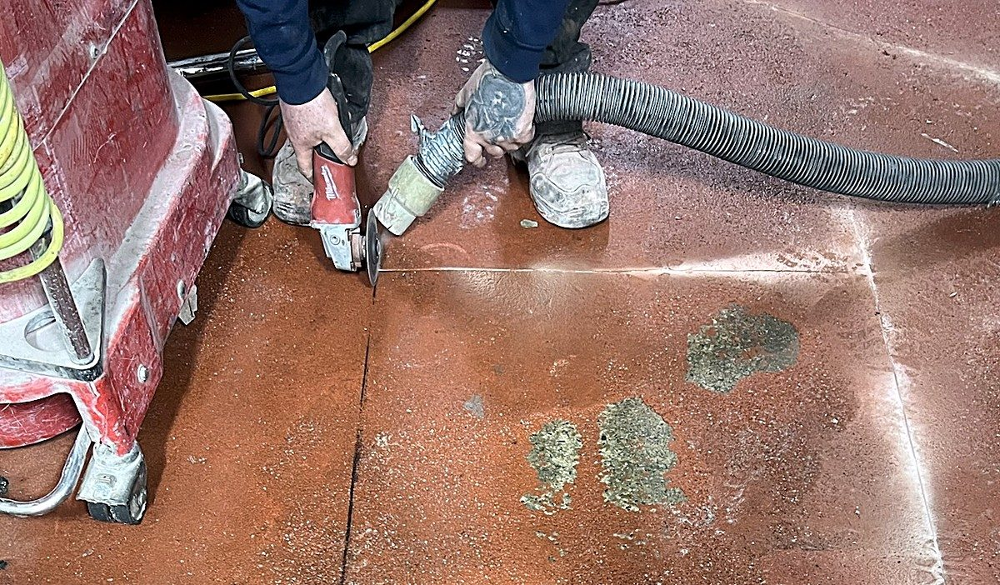
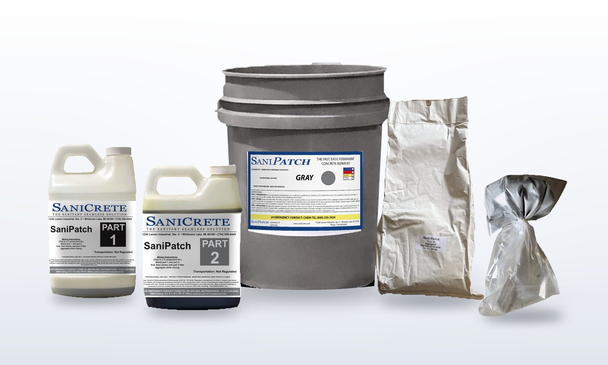
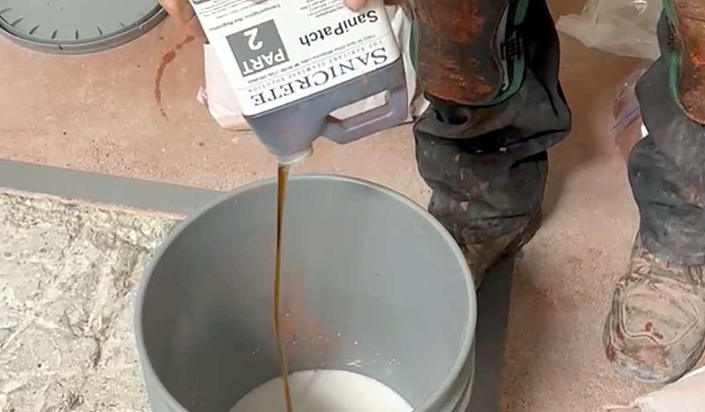
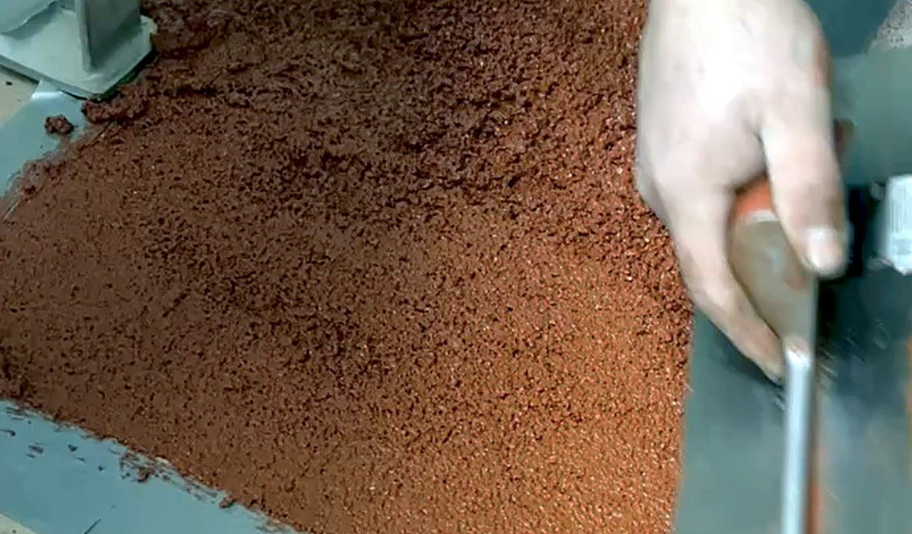
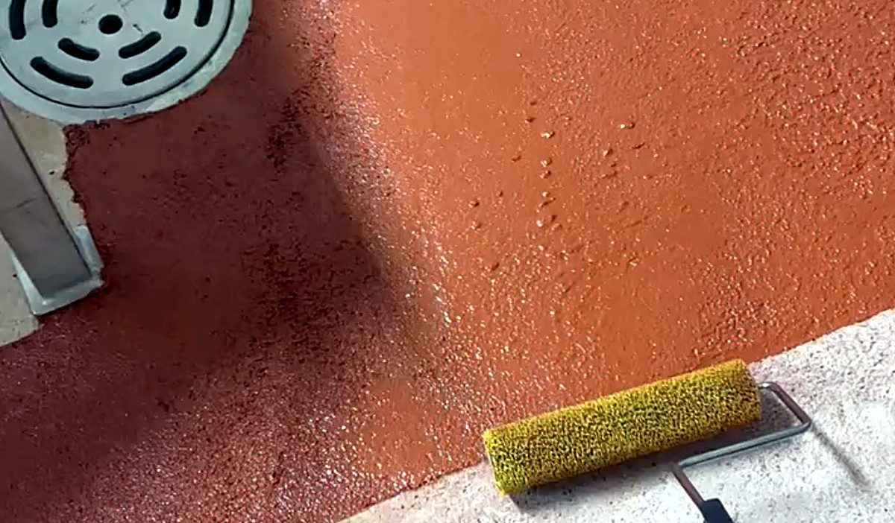

1. Prep and key the edges
Grind or chip out loose concrete, grease and coatings, then vacuum. Notch the edges about 1/4" deep so the patch locks in.
The Fast & Easy DIY Concrete Repair Kit for Food Processing
Is your facility experiencing floor failures between scheduled shutdowns? Cracked concrete, hi-lo damage, and deteriorating surfaces lead to USDA/FDA fines, safety hazards, and contamination risks.
SaniPatch is the solution. Our professional-grade DIY repair kit lets your maintenance team fix floor damage quickly—without waiting for contractors or scheduling a shutdown.
Same chemistry as our commercial SaniCrete systems. Professional results. Easy application. Get back to production in hours, not days.
You supply: a 1/2" drill with a spiral or mud mixing paddle, a cement trowel and a loop texture roller.

USDA/FDA violation risk
Forklift & pallet jack wear
Drainage & sanitation issues
Worker safety concerns
Most repairs take under an hour of hands-on time. Forklifts are back on it in 6 hours.

Grind or chip out loose concrete, grease and coatings, then vacuum. Notch the edges about 1/4" deep so the patch locks in.

Pour Part 1, then Part 2, and mix. With the drill running, slowly add Part 3 and mix about a minute until even.

Pour right away and level it with a cement trowel. You have about 10 minutes of working time.

Lightly roll with a loop texture roller, then broadcast the included quartz for a non-slip finish.
Download the Installation Guide (PDF)
Watch the full install in about 90 seconds.
Professional-grade performance in a DIY-friendly package
| Specification | Value |
|---|---|
| Coverage | 10 sq ft per kit at 1/4" (7 sq ft at 3/8") |
| Application depth | 1/4" to 2" |
| Working time | About 10 minutes at 72°F |
| Foot traffic | 4 hours |
| Full service (forklifts, pallet jacks) | 6 hours |
| Application temperature | Above freezing; substrate damp is OK, not wet |
| Compressive strength | 8,500 psi (ASTM C579) |
| Service temperature | -50°F to 235°F |
| Standard colors | Red and gray (custom colors made to order) |
| Shelf life | 12 months unopened |
| USDA accepted | Yes |
Our team can help you determine if SaniPatch is right for your repair needs.
Contact Us →